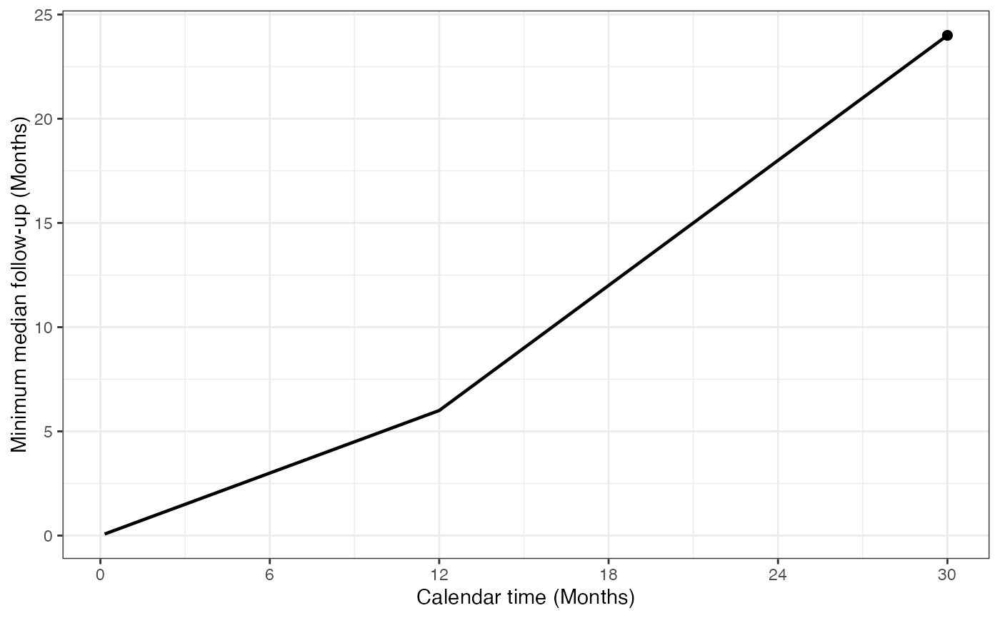

Computes minimum median follow-up at one or more calendar times under the
enrollment assumptions in an nSurv or gsSurv object. Minimum
median follow-up is defined as the time elapsed since enrollment reached
one-half of the enrollment accumulated by the requested calendar time.
After enrollment is complete, this is one-half of final planned enrollment.
Usage
minMedianFollowUp(x, calendarTime = x$T)
plotMinMedianFollowUp(
x,
calendarTime = NULL,
showAnalysisTimes = TRUE,
timename = "Months"
)Arguments
- x
An
nSurvorgsSurvobject.- calendarTime
Nonnegative calendar time(s) from the start of enrollment. For
minMedianFollowUp(), the default is the planned analysis time(s) inx$T. ForplotMinMedianFollowUp(),NULLcreates a grid from trial start through the final planned analysis time.- showAnalysisTimes
Logical scalar indicating whether analysis times should be marked with points. For an
nSurvobject, this marks the final study time.- timename
Nonempty character string indicating the time unit. Month and year labels (singular or plural, case-insensitive) use x-axis breaks every 6 months and 0.5 years, respectively. Other units use the default
ggplot2breaks.
Value
minMedianFollowUp() returns a numeric vector with one value
for each value of calendarTime.
plotMinMedianFollowUp() returns a ggplot object.
Details
Enrollment is integrated over the piecewise-constant rates in
x$gamma and durations in x$R, summing rates across strata.
Thus, at each requested calendar time, the median enrollment time is the
first time at which expected cumulative enrollment reached one-half of the
enrollment accumulated by then. Before any enrollment has occurred, the
result is NA_real_.
The computation represents potential follow-up for all subjects randomized
by the requested calendar time. Conceptually, each subject contributes the
time from enrollment to that calendar time, regardless of whether the
subject would have experienced the event of interest, discontinued, or
dropped out. Event and dropout assumptions such as x$lambdaC,
x$etaC, and x$etaE therefore do not enter the calculation.
This is not observed follow-up among subjects who remain under observation.
This definition is continuous at the time enrollment completes when the enrollment rate immediately before completion is positive. The value may have kinks when an enrollment rate changes. A zero-enrollment period can produce a discontinuity because no subjects have enrollment times within that interval.
Examples
x <- gsSurv(gamma = 10, R = 12, T = 30, minfup = 18)
# Minimum median follow-up at each planned analysis
minMedianFollowUp(x)
#> [1] 5.039032 10.183086 24.000000
# Minimum median follow-up at 12, 18, and 24 months
minMedianFollowUp(x, calendarTime = c(12, 18, 24))
#> [1] 6 12 18
# Plot its evolution through the planned analyses
plotMinMedianFollowUp(x)
# The same functions work for a fixed survival design
x_fixed <- nSurv(gamma = 10, R = 12, T = 30, minfup = 18)
minMedianFollowUp(x_fixed)
#> [1] 24
plotMinMedianFollowUp(x_fixed)
